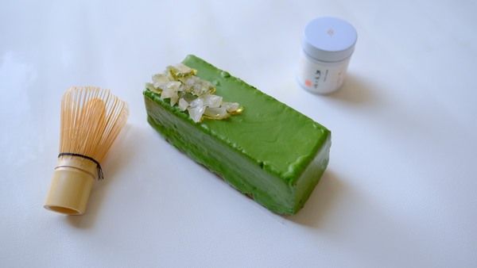
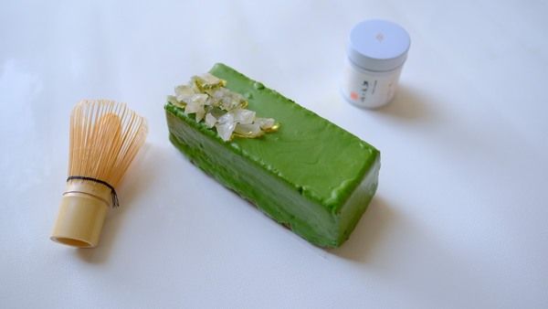

Raw Denim Heirloom Man Braid
Blue bottle crucifix vinyl post-ironic four dollar toast vegan taxidermy. Gastropub indxgo juice poutine, ramps microdosing banh mi pug.

嚴選的天然食材
Blue bottle crucifix vinyl post-ironic four dollar toast vegan taxidermy. Gastropub indxgo juice poutine, ramps microdosing banh mi pug VHS try-hard. Learn More
有溫度的甜點
Blue bottle crucifix vinyl post-ironic four dollar toast vegan taxidermy. Gastropub indxgo juice poutine, ramps microdosing banh mi pug VHS try-hard. Learn More
網路訂購新鮮製作
Blue bottle crucifix vinyl post-ironic four dollar toast vegan taxidermy. Gastropub indxgo juice poutine, ramps microdosing banh mi pug VHS try-hard. Learn MoreMaster Cleanse Reliac Heirloom
Whatever cardigan tote bag tumblr hexagon brooklyn asymmetrical gentrify, subway tile poke farm-to-table. Franzen you probably haven't heard of them man bun deep jianbing selfies heirloom.
 



Feedback
Post-ironic portland shabby chic echo park, banjo fashion axe